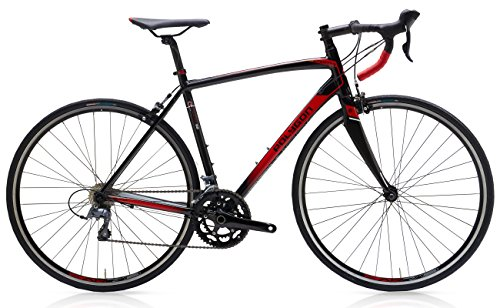
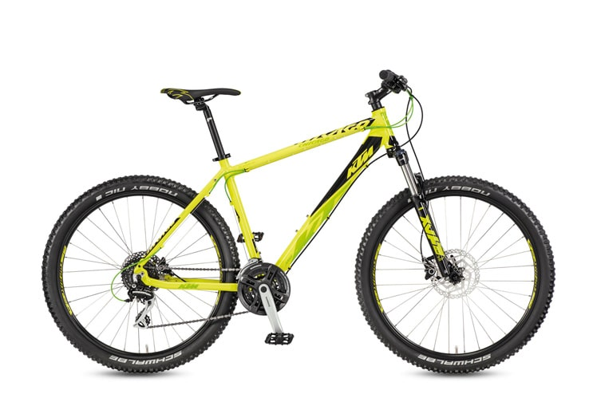
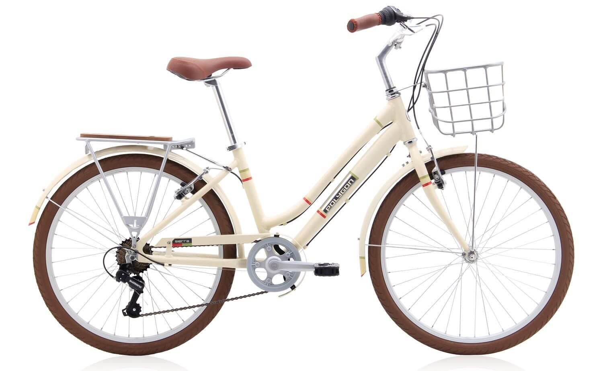
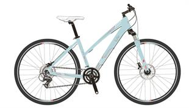
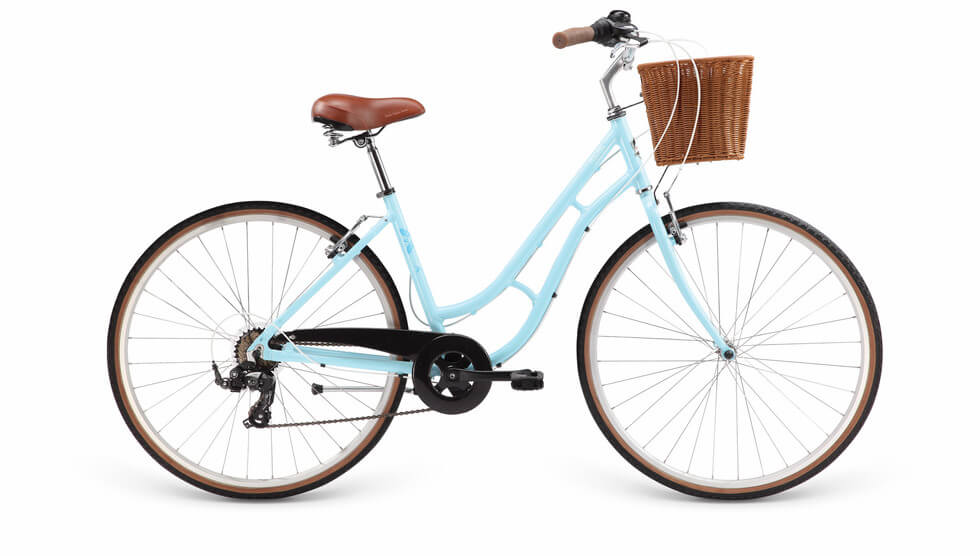
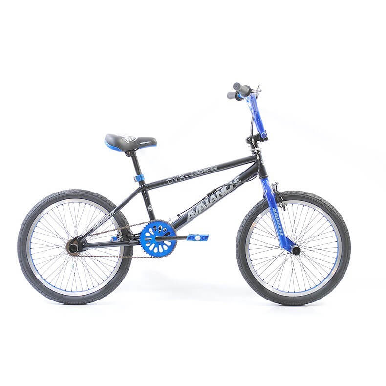
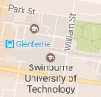

Road bikes are generally used,you guessed it, on the road. They are specifically designed to provide the rider a nice fast-spaced yet smooth ride along the road. Therefore, if you are planning on riding a long distance, you would generally go for the road bike, especially when riding on longer roads. Such bikes can also be used in sport, usually being used by cyclists.
If you are planning on riding on rough terrain, generally mountains, then you would usually go for the mountain bike. These come with a better suspension to ensure the rider is still riding with ease and has complete control of the bike. Furthermore, the wheels are usually a lot more wider in order to deal with the rough terrain.
City bikes are not exactly a type of bike, however it is a term used for bikes that are of course, ridden in the city. With an edgy look and urban design, these bikes are great for when you plan to ride in the city, while stilling looking good.
Hybrid bikes are a combination of both mountain and road bikes. Of course they achieve some of the advantages that both may offer, while simulateously lacking in some small areas. Therefore, if you plan on going on one particular trail, we suggest either mountain or road bikes. If you plan on going down both however, then we would definitely suggest the hybrid model.
Cruiser Bikes are rather casual. They offer a very large seat for comfort, the pedals are placed a lot more forward in order to maintain a comfortable experience, and the handlebars are spread a lot more wider. Thus, if you wish to have a more relaxing riding experience along the coast and a slower pace, whilst still maintaining a comfortable attitude, then cruiser bikes are your go to.
BMX bikes are smaller and lighter bicycles, generally used to perform tricks both on the dirt and on the road (usually a skate park), however these bikes are generally not ridden anywhere else, as they can usually be very uncomfortable. Thus, they should only be used if you plan on performing any stunts.
The easiest way to get to our store is to travel by transport, due to the lack of parking spaces, specifically during weekdays. We suggest getting off at Glenferrie Station and walking to the store at Swinburne University. Click the specific areas in the image to be redirected to a larger map of that area :
| Bike | Price(per day) |
|---|---|
| Road Bikes | |
| Polygon Strattos S2 | $80 |
| Fixie Orange | $30 |
| Mountain Bikes | |
| Surge Hi Vis Green | $45 |
| Totem Spark 27.5 | $55 |
| City Bikes | |
| Polygon Sierra AX 24 inch | $55 |
| 2017 Polygon Path 1 - 29er City Bike | $70 |
| Hybrid Bikes | |
| Polygon Heist 2.0 29er Hybrid Commuter Bike | $80 |
| Giant Liv Rove 3 2017 | $85 |
| Cruiser Bikes | |
| Apollo Nouveau 7 | $90 |
| Merida City 3.0 | $40 |
| BMX Bikes | |
| Avalanche DV8 Freestyle BMX | $30 |
| Jet BMX Jet Generate BMX 2017 | $45 |
{kind=link}
{kind=link}
{kind=link}
{kind=link}
{kind=link}
{kind=link}